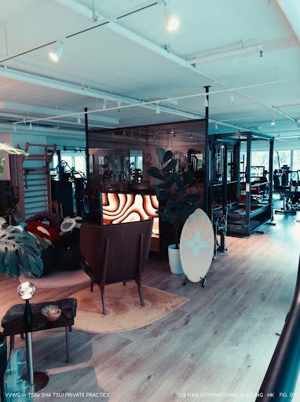

掌握你的身體資本。 Own Your Capacity.
為你所渴望的生活建立身體方案。以客觀生理基線、結構化教練判斷及可驗證的機能儲備為本。 A plan for the life you want to live. Built on objective baselines, structured coaching, and measurable physiological reserve.
只作精準量度，不作醫療診斷。 Measure, not diagnose.
運動表現與長遠健康，本質上是同一條公式：生理儲備。 Performance and longevity are the same equation: Physiological Reserve.
市面上多數訓練方案依賴直覺、千篇一律的課表或短期高強度消耗。V2 Wellness Group 將體能視作長遠的「健康資本」。無論你正備戰一場耐力賽事，還是希望未來數十年維持獨立出行的自由，真正的瓶頸從來不是意志力，而是心肺與血管、肌力與下肢、平衡與穩定、身體組成四個領域中最短的那塊木板。 Most training programs rely on guesswork, generic templates, or short-term intensity. At V2 Wellness Group, we treat physical capacity as long-term health capital. Whether you are preparing for an endurance milestone or preserving independent mobility for the decades ahead, the limiting factor is never motivation—it is the weakest link across your cardiorespiratory capacity, lower-body strength, balance, and body composition.
表現與代謝上限 Performance & Metabolic Optimization
為高管、耐力跑手及專業人士而設，在有限時間與高壓行程下，建立可持續的體能上限。 For executives, endurance athletes, and professionals optimizing output under real-world schedules.
代謝效率與有氧閾值鎖定 · 力量輸出與抗傷韌性 · 主動訓練與被動修復配比 Metabolic efficiency & aerobic thresholds · Force production & injury resilience · Structured recovery integration
健康資本與機能儲備 Health Capital & Functional Reserve
建立機能儲備，而非被動補救——為未來數十年守住肌力、平衡穩定與生活自主權。 Building functional reserve, not damage limitation—preserving strength, stability, and autonomy for the decades ahead.
心肺耐力與步態穩定 · 下肢肌力與防跌安全邊際 · 清晰透明的雙層進度報告 Cardiorespiratory & gait endurance · Lower-body power & fall resilience · Clear progress documentation for clients and families
由客觀基線，到可驗證的實測變化。 From objective baseline to verified delta.
標準化基線採集 Diagnostic Baseline
於可重現的標準條件下，系統化採集代謝能力、身體結構、力量輸出與動作機能基線。 Comprehensive physiological and functional screening across metabolic capacity, body composition, strength, and movement mechanics—conducted under repeatable conditions.
常模對照與短板鎖定 Normative Scoring & Limiting Factor
對照已發表之常模研究，建構個人「健康資本指數（HCI）」，鎖定當下首要限制因子。 Benchmarked against published normative research to construct your Health Capital Index (HCI), isolating the primary bottleneck that governs your next phase.
主被動雙軌介入 Structured Active & Passive Protocol
數據本身並非方案。由專屬教練結合客觀指標與專業判斷制定階段性訓練，並僅在多項生理指標達標時，審慎配合被動修復模組。 Data alone is not a program. Your dedicated coach synthesizes objective findings into a phased training plan, integrating targeted recovery modalities strictly when physiological indicators warrant them.
16 堂週期與同條件複測 16-Session Cycle & Re-assessment
每 16 堂為一個完整週期，透過同條件複測核對實測數值與真實變化（Δ），並標註可比性等級，絕不以百分比粉飾結果。 Every 16-session cycle concludes with a matched-condition re-assessment, reporting raw measured values and actual change (Δ) with explicit comparability ratings—never inflated percentages.
透明標準，真人把關。 Transparent standards. Human accountability.
反黑盒原則 No Black Boxes
所有常模錨點均附公開文獻來源；實測數據與推算數值嚴格分級標示。 Every normative benchmark cites its published source. Measured values are strictly separated from estimates.
雙軌把關 Coach Oversight
系統協助整理數據，但所有方案判斷、安全紅線與報告發佈，均由專屬教練親自審核簽署。 Technology structures the data; our coaches own every coaching decision, safety boundary, and report release.
清晰專業邊界 Clear Scope of Practice
本中心不提供醫療診斷或物理治療。如出現醫學紅旗，我們會先作轉介，並在取得醫生書面許可後方展開訓練。 We do not provide medical diagnosis or physiotherapy. Where medical red flags arise, we refer first and proceed only with your physician's written clearance.
由持有美國國家運動醫學學院（NASM）、美國國家肌力與體能協會（NSCA-CSCS）及 Titleist 運動表現學院（TPI）認證之專業教練主理。 Coaching team holding credentials from the National Academy of Sports Medicine (NASM), National Strength and Conditioning Association (NSCA-CSCS), and Titleist Performance Institute (TPI).
採預約及轉介制。 By appointment and referral.
V2 Wellness Group 於香港尖沙咀以低密度私人執業模式運作。請留下聯絡資料，我們的團隊將與你安排初步諮詢及基線評估。如無轉介人，請於「簡述目標或現況」欄說明查詢緣由。 V2 Wellness Group operates as a low-density private practice in Tsim Sha Tsui, Hong Kong. Submit your details below to arrange an initial consultation and baseline screening. If you do not have a referrer, please briefly state the reason for your enquiry in the context field below.
